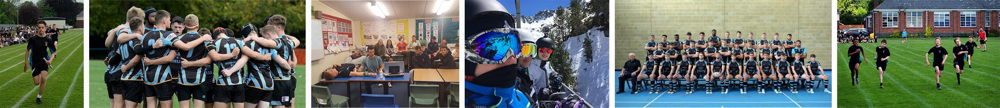

Physical Education

Whitchurch High School has produced sportsmen and sportswoman of the highest calibre and personalities that strive to be the best in their selected sports . This ethos of high participation and producing players for both the community and Elite section of sport has been carried forward with huge success in all sports over recent years.
Please click on the image below for an page with collated information about Geraint Thomas and his victory in 'Le Tour de France':
The sporting facilities within the school are excellent with a swimming pool, astro turf, gymnasium, large sports hall, 10 Power League football pitches, rugby pitch and combined football/ rugby pitch on the lower school site and two rugby pitches, one football pitch, cricket wicket, small astro, sports hall and two weights rooms on the upper school site.
The school and the PE department has a very strong ‘can-do’ ethos that helps facilitate a very strong and inclusive attitude for all recognised by Whitchurch High School winning the prestigious ‘State School of the Year Award’ at the Daily Telegraph ‘School Sports Matters’ Award in 2011.
Many of our student’s male and female have gain county and International honours at school level and then progress to play for local clubs, premier division sides and National squads in several different sports.
Past students such as Hannah Zaman (Cricket), Naomi Davies (Cricket), Carys Tucker (hockey) and Sarah Thomas (Badminton) are just a sample of female athletes who have gone on to represent Wales at senior level. Whilst boys such as Sam Warburton, Gareth Bale, Geraint Thomas, Elliot Kear, Steve Morris and recently Kiran Carlson playing cricket for Glamorgan have all helped enhance the schools sporting reputation and have become great role models for our pupils.
The school runs sporting teams for both boys and girls on a weekly basis in many sports from 11 to 18 years of age. These teams complete in local leagues and national competitions with great success and also have great experiences when competing against touring sides from all over the world.
The school also holds inter-from events to ensure that all students have the opportunity to play competitive sport during the year these events include rugby, hockey, netball, football, cross country and our annual sports day. The school is now, in conjunction with the Welsh Gymnastics Association, accommodating high performance gymnasts as a part of their educational programme.
The school has now established a strong touring culture of its own and tour the Southern hemisphere on a biannual basis ensuring that boys and girls get the opportunity to widen both their sporting and cultural experiences. We also run an annual ski trip to Andorra and an Outdoor Pursuit week to Story Arms.
Please click on the image below for information regarding our Andorra visit:
Academically the department run the following courses:
GCSEAS/A2
Whitchurch Rugby Academy
Whitchurch High School has a senior Rugby Academy that identifies and develops talented young athletes from the ages of 15 to 19 and engages them in an elite, high-performance development programme. For further information, please click the link below:

The relationships the school has with our local primary partner schools are very strong with all year 6 pupils attending Whitchurch High for one afternoon, alternate weeks, for lessons throughout the year as part of our very successful PPA scheme. There are also specific induction days. Our students are often in the Primary schools; such as the Sports Leaders assisting with sports day events and many Welsh Baccalaureate students. The school sports facilities school facilities such as the swimming pool are utilised by the local community.
If you require further information, please contact Mr G Morris, Departmental Leader.